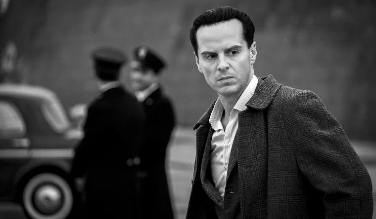

Who is he?
Tom Ripley is an American travelling in Italy with one aim only: to rip off the identity of Dickie Greenleaf and steal all his worldly goods.
Although he has some interesting character strengths, overall, he is a thoroughly terrible person.
Tom has been portrayed on screen multiple times, including by Matt Damon and Andrew Scott.
